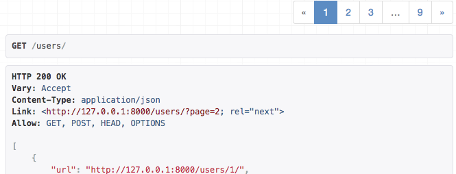

Pagination
Django는 페이지네이션된 데이터를 관리하는 데 도움이 되는 몇 가지 클래스를 제공합니다. 즉, 데이터를 여러 페이지로 나누고 “이전/다음(Previous/Next)” 링크를 제공하는 방식입니다.
REST framework는 커스터마이징 가능한 페이지네이션 스타일을 지원합니다. 이를 통해 큰 결과 집합을 개별 데이터 페이지로 어떻게 나눌지 조정할 수 있습니다.
페이지네이션 API는 다음 중 하나를 지원할 수 있습니다.
- 응답 본문(content)의 일부로 제공되는 페이지네이션 링크
Content-Range또는Link같은 응답 헤더에 포함되는 페이지네이션 링크
현재 내장된 스타일들은 모두 응답 본문에 링크를 포함하는 방식을 사용합니다. 이 방식은 browsable API에서 사용할 때 더 접근성이 좋습니다.
페이지네이션은 generic view 또는 viewset을 사용할 때만 자동으로 수행됩니다. 일반 APIView 를 사용한다면, 페이지네이션 API를 직접 호출해서 페이지네이션된 응답을 반환해야 합니다. 예시는 mixins.ListModelMixin 및 generics.GenericAPIView 클래스의 소스 코드를 참고하세요.
페이지네이션은 pagination class를 None 으로 설정하면 비활성화할 수 있습니다.
Setting the pagination style
페이지네이션 스타일은 전역으로 DEFAULT_PAGINATION_CLASS 와 PAGE_SIZE 설정 키를 사용해 지정할 수 있습니다. 예를 들어 내장 limit/offset 페이지네이션을 사용하려면 다음처럼 설정합니다.
REST_FRAMEWORK = {
'DEFAULT_PAGINATION_CLASS': 'rest_framework.pagination.LimitOffsetPagination',
'PAGE_SIZE': 100
}
pagination class와 page size를 둘 다 설정해야 한다는 점에 유의하세요. DEFAULT_PAGINATION_CLASS 와 PAGE_SIZE 는 기본값이 모두 None 입니다.
또한 개별 뷰에서는 pagination_class 속성을 사용해 페이지네이션 클래스를 지정할 수도 있습니다. 일반적으로는 API 전체에서 동일한 페이지네이션 스타일을 사용하는 편이 좋지만, 기본/최대 page size 같은 일부 요소는 뷰 단위로 다르게 주고 싶을 수도 있습니다.
Modifying the pagination style
페이지네이션 스타일의 특정 요소를 바꾸고 싶다면, 페이지네이션 클래스를 상속하여 수정하고 싶은 속성을 오버라이드하면 됩니다.
class LargeResultsSetPagination(PageNumberPagination):
page_size = 1000
page_size_query_param = 'page_size'
max_page_size = 10000
class StandardResultsSetPagination(PageNumberPagination):
page_size = 100
page_size_query_param = 'page_size'
max_page_size = 1000
이후 뷰에 pagination_class 속성으로 적용할 수 있습니다.
class BillingRecordsView(generics.ListAPIView):
queryset = Billing.objects.all()
serializer_class = BillingRecordsSerializer
pagination_class = LargeResultsSetPagination
또는 DEFAULT_PAGINATION_CLASS 설정 키로 전역 적용할 수도 있습니다. 예:
REST_FRAMEWORK = {
'DEFAULT_PAGINATION_CLASS': 'apps.core.pagination.StandardResultsSetPagination'
}
API Reference
PageNumberPagination
이 페이지네이션 스타일은 요청 query parameter에서 단일 페이지 번호를 받습니다.
Request:
GET https://api.example.org/accounts/?page=4
Response:
HTTP 200 OK
{
"count": 1023,
"next": "https://api.example.org/accounts/?page=5",
"previous": "https://api.example.org/accounts/?page=3",
"results": [
…
]
}
Setup
PageNumberPagination 스타일을 전역으로 활성화하려면 아래 설정을 사용하고, PAGE_SIZE 를 원하는 값으로 지정하세요.
REST_FRAMEWORK = {
'DEFAULT_PAGINATION_CLASS': 'rest_framework.pagination.PageNumberPagination',
'PAGE_SIZE': 100
}
GenericAPIView 를 상속한 뷰에서는 뷰 단위로 pagination_class 속성을 설정해 PageNumberPagination 을 선택할 수도 있습니다.
Configuration
PageNumberPagination 은 페이지네이션 스타일을 수정하기 위해 오버라이드할 수 있는 여러 속성을 제공합니다.
이 속성들을 설정하려면 PageNumberPagination 을 상속한 커스텀 클래스를 만들고, 위에서처럼 커스텀 pagination 클래스를 활성화하면 됩니다.
django_paginator_class- 사용할 Django Paginator 클래스. 기본값은django.core.paginator.Paginator이며 대부분의 경우 충분합니다.page_size- 페이지 크기를 나타내는 숫자 값. 설정하면PAGE_SIZE설정을 덮어씁니다. 기본값은PAGE_SIZE와 동일합니다.page_query_param- 페이지 번호를 지정할 query parameter 이름을 나타내는 문자열 값.page_size_query_param- 설정하면, 클라이언트가 요청 단위로 page size를 지정할 수 있게 해주는 query parameter 이름(문자열 값)입니다. 기본값은None이며, 이 경우 클라이언트가 page size를 제어할 수 없습니다.max_page_size- 설정하면, 클라이언트가 요청할 수 있는 최대 page size를 나타내는 숫자 값입니다. 이 속성은page_size_query_param도 함께 설정된 경우에만 유효합니다.last_page_strings-page_query_param과 함께 사용하여 마지막 페이지를 요청할 수 있는 문자열 값들의 리스트/튜플입니다. 기본값은('last',)입니다. 예:?page=last로 마지막 페이지로 바로 이동.template- browsable API에서 페이지네이션 컨트롤을 렌더링할 때 사용할 템플릿 이름입니다. 렌더링 스타일을 바꾸기 위해 오버라이드할 수 있고,None으로 설정하면 HTML 페이지네이션 컨트롤을 완전히 비활성화할 수 있습니다. 기본값은"rest_framework/pagination/numbers.html"입니다.
LimitOffsetPagination
이 페이지네이션 스타일은 여러 DB 레코드를 조회할 때 흔히 쓰는 문법을 반영합니다. 클라이언트는 "limit" 과 "offset" query parameter를 함께 전달합니다.
limit 는 반환할 최대 아이템 수를 의미하며, 다른 스타일의 page_size 와 동일한 개념입니다.
offset 은 전체(페이지네이션되지 않은) 아이템 집합에서 조회가 시작될 위치를 의미합니다.
Request:
GET https://api.example.org/accounts/?limit=100&offset=400
Response:
HTTP 200 OK
{
"count": 1023,
"next": "https://api.example.org/accounts/?limit=100&offset=500",
"previous": "https://api.example.org/accounts/?limit=100&offset=300",
"results": [
…
]
}
Setup
LimitOffsetPagination 스타일을 전역으로 활성화하려면 다음 설정을 사용합니다.
REST_FRAMEWORK = {
'DEFAULT_PAGINATION_CLASS': 'rest_framework.pagination.LimitOffsetPagination'
}
선택적으로 PAGE_SIZE 키를 설정할 수도 있습니다. PAGE_SIZE 를 함께 사용하면, limit query parameter는 선택 사항이 되며 클라이언트가 생략할 수 있습니다.
GenericAPIView 를 상속한 뷰에서는 뷰 단위로 pagination_class 속성을 설정해 LimitOffsetPagination 을 선택할 수도 있습니다.
Configuration
LimitOffsetPagination 은 페이지네이션 스타일을 수정하기 위해 오버라이드할 수 있는 여러 속성을 제공합니다.
이 속성들을 설정하려면 LimitOffsetPagination 을 상속한 커스텀 클래스를 만들고, 위에서처럼 커스텀 pagination 클래스를 활성화하면 됩니다.
default_limit- 클라이언트가 query parameter로 limit을 제공하지 않을 때 사용할 limit(숫자 값)입니다. 기본값은PAGE_SIZE와 동일합니다.limit_query_param-"limit"query parameter 이름을 나타내는 문자열 값. 기본값은'limit'.offset_query_param-"offset"query parameter 이름을 나타내는 문자열 값. 기본값은'offset'.max_limit- 설정하면, 클라이언트가 요청할 수 있는 최대 limit(숫자 값)입니다. 기본값은None.template- browsable API에서 페이지네이션 컨트롤을 렌더링할 때 사용할 템플릿 이름입니다. 렌더링 스타일을 바꾸기 위해 오버라이드할 수 있고,None으로 설정하면 HTML 페이지네이션 컨트롤을 완전히 비활성화할 수 있습니다. 기본값은"rest_framework/pagination/numbers.html"입니다.
CursorPagination
커서 기반 페이지네이션은 클라이언트가 결과 집합을 넘겨볼 때 사용할 수 있는, 불투명한(opaque) "cursor" 표시자를 제공합니다. 이 방식은 앞/뒤 이동만 제공하며, 임의의 위치로 점프하는 것을 허용하지 않습니다.
커서 기반 페이지네이션을 사용하려면 결과 집합에 대해 유일하고 변하지 않는 정렬이 필요합니다. 보통 레코드의 생성 시각(timestamp)처럼, 일관된 정렬 기준을 사용하는 것이 일반적입니다.
커서 기반 페이지네이션은 다른 방식보다 복잡합니다. 결과 집합이 고정된 순서로 제공되어야 하고, 클라이언트가 임의로 인덱싱할 수 없습니다. 대신 다음과 같은 장점이 있습니다.
- 일관된 페이지네이션 뷰 제공: 올바르게 사용하면
CursorPagination은 페이지를 넘기는 동안 다른 클라이언트가 새 아이템을 삽입하더라도, 같은 아이템을 두 번 보지 않도록 보장합니다. - 매우 큰 데이터셋에 적합: 데이터가 매우 큰 경우 offset 기반 페이지네이션은 비효율적이거나 사용 불가능해질 수 있습니다. 커서 기반은 대신 고정 시간 성질을 가지며, 데이터셋이 커져도 느려지지 않습니다.
Details and limitations
커서 기반 페이지네이션을 올바르게 사용하려면 세부 사항에 주의를 기울여야 합니다. 어떤 정렬 기준을 적용할지 생각해야 합니다. 기본값은 "-created" 로 정렬합니다. 이는 모델 인스턴스에 created 타임스탬프 필드가 반드시 존재해야 하며, 가장 최근에 추가된 항목이 먼저 오는 “타임라인” 스타일 뷰를 제공합니다.
정렬 기준은 pagination class의 'ordering' 속성을 오버라이드하거나, CursorPagination 과 함께 OrderingFilter 를 사용하여 변경할 수 있습니다. OrderingFilter 를 함께 사용할 때는 사용자가 정렬할 수 있는 필드를 제한하는 것을 강력히 권장합니다.
커서 페이지네이션에 적합한 ordering 필드는 다음 조건을 만족해야 합니다.
- 생성 시 한 번만 설정되는 값(타임스탬프, 슬러그 등)처럼 변하지 않는 값이어야 합니다.
- 유일하거나 거의 유일해야 합니다. 밀리초 단위 타임스탬프가 좋은 예입니다. 이 커서 페이지네이션 구현은 “position + offset” 방식으로, 완전히 유일하지 않은 값도 적절히 지원하도록 설계되어 있습니다.
- 문자열로 강제 변환(coerce)할 수 있는 non-nullable 값이어야 합니다.
- float 타입이면 안 됩니다. 정밀도 오류로 인해 잘못된 결과가 쉽게 발생합니다.
힌트: 대신 decimal을 사용하세요.
(이미 float 필드가 있고 반드시 그 필드로 페이지네이션해야 한다면, 정밀도를 제한하기 위해 decimal을 사용하는CursorPagination서브클래스 예제가 여기에 있습니다.) - 해당 필드에는 DB 인덱스가 있어야 합니다.
이 제약을 만족하지 않는 ordering 필드를 사용해도 대체로 동작은 하지만, 커서 페이지네이션의 장점 일부를 잃게 됩니다.
커서 페이지네이션 구현에 대한 더 기술적인 설명은, Disqus API의 커서를 만드는 방법을 다룬 "Building cursors for the Disqus API" 글이 기본 접근 방식을 잘 설명합니다.
Setup
CursorPagination 스타일을 전역으로 활성화하려면 다음 설정을 사용하고, PAGE_SIZE 는 필요에 맞게 변경하세요.
REST_FRAMEWORK = {
'DEFAULT_PAGINATION_CLASS': 'rest_framework.pagination.CursorPagination',
'PAGE_SIZE': 100
}
GenericAPIView 를 상속한 뷰에서는 뷰 단위로 pagination_class 속성을 설정해 CursorPagination 을 선택할 수도 있습니다.
Configuration
CursorPagination 은 페이지네이션 스타일을 수정하기 위해 오버라이드할 수 있는 여러 속성을 제공합니다.
이 속성들을 설정하려면 CursorPagination 을 상속한 커스텀 클래스를 만들고, 위에서처럼 커스텀 pagination 클래스를 활성화하면 됩니다.
page_size= 페이지 크기를 나타내는 숫자 값입니다. 설정하면PAGE_SIZE설정을 덮어씁니다. 기본값은PAGE_SIZE와 동일합니다.cursor_query_param="cursor"query parameter 이름을 나타내는 문자열 값입니다. 기본값은'cursor'.ordering= 커서 기반 페이지네이션이 적용될 필드를 나타내는 문자열 또는 문자열 리스트입니다. 예:ordering = 'slug'. 기본값은-created입니다. 이 값은 뷰에서OrderingFilter를 사용하면 오버라이드될 수도 있습니다.template= browsable API에서 페이지네이션 컨트롤을 렌더링할 때 사용할 템플릿 이름입니다. 렌더링 스타일을 바꾸기 위해 오버라이드할 수 있고,None으로 설정하면 HTML 페이지네이션 컨트롤을 완전히 비활성화할 수 있습니다. 기본값은"rest_framework/pagination/previous_and_next.html"입니다.
Custom pagination styles
커스텀 페이지네이션 serializer 클래스를 만들려면 pagination.BasePagination 을 상속하고, paginate_queryset(self, queryset, request, view=None) 및 get_paginated_response(self, data) 메서드를 오버라이드해야 합니다.
paginate_queryset메서드는 초기 queryset을 입력으로 받아, 요청된 페이지에 해당하는 데이터만 포함하는 iterable 객체를 반환해야 합니다.get_paginated_response메서드는 직렬화된 페이지 데이터(serialize된 data)를 입력으로 받아Response인스턴스를 반환해야 합니다.
paginate_queryset 메서드는 pagination 인스턴스에 상태(state)를 설정할 수 있으며, 이 상태는 나중에 get_paginated_response 메서드에서 사용할 수 있습니다.
Example
기본 페이지네이션 출력 스타일을 바꾸어, next 와 previous 링크를 중첩된 'links' 키 아래에 포함하는 포맷으로 바꾸고 싶다고 가정해봅시다. 다음과 같이 커스텀 pagination 클래스를 지정할 수 있습니다.
class CustomPagination(pagination.PageNumberPagination):
def get_paginated_response(self, data):
return Response({
'links': {
'next': self.get_next_link(),
'previous': self.get_previous_link()
},
'count': self.page.paginator.count,
'results': data
})
그 다음 설정에서 커스텀 클래스를 등록해야 합니다.
REST_FRAMEWORK = {
'DEFAULT_PAGINATION_CLASS': 'my_project.apps.core.pagination.CustomPagination',
'PAGE_SIZE': 100
}
Browsable API에서 응답 키의 표시 순서가 중요하다면, 페이지네이션 응답 본문을 구성할 때 OrderedDict 를 사용할 수도 있습니다. 다만 이는 선택 사항입니다.
Using your custom pagination class
커스텀 페이지네이션 클래스를 기본값으로 사용하려면 DEFAULT_PAGINATION_CLASS 를 설정합니다.
REST_FRAMEWORK = {
'DEFAULT_PAGINATION_CLASS': 'my_project.apps.core.pagination.LinkHeaderPagination',
'PAGE_SIZE': 100
}
이제 리스트 엔드포인트의 API 응답은, 본문에 링크를 포함하는 대신 Link 헤더를 포함하게 됩니다. 예:

'Link' 헤더를 사용하는 커스텀 페이지네이션 스타일
HTML pagination controls
기본적으로 페이지네이션 클래스를 사용하면 browsable API에서 HTML 페이지네이션 컨트롤이 표시됩니다. 내장된 표시 스타일은 두 가지입니다.
PageNumberPagination 과 LimitOffsetPagination 은 이전/다음 컨트롤과 함께 페이지 번호 목록을 표시합니다.
CursorPagination 은 이전/다음 컨트롤만 표시하는 더 단순한 스타일을 사용합니다.
Customizing the controls
HTML 페이지네이션 컨트롤을 렌더링하는 템플릿을 오버라이드할 수 있습니다. 내장된 두 템플릿 경로는 다음과 같습니다.
rest_framework/pagination/numbers.htmlrest_framework/pagination/previous_and_next.html
전역 템플릿 디렉터리(global template directory)에 위 경로 중 하나로 템플릿을 제공하면, 해당 pagination 클래스의 기본 렌더링을 오버라이드할 수 있습니다.
또는 기존 클래스 중 하나를 상속하여 클래스 속성으로 template = None 을 설정함으로써 HTML 페이지네이션 컨트롤을 완전히 비활성화할 수도 있습니다. 이 경우, 커스텀 클래스를 기본 페이지네이션 스타일로 사용하도록 DEFAULT_PAGINATION_CLASS 설정 키를 구성해야 합니다.
Low-level API
페이지네이션 클래스가 컨트롤을 표시해야 하는지 여부를 판단하는 low-level API는 pagination 인스턴스의 display_page_controls 속성으로 노출됩니다. 커스텀 페이지네이션 클래스가 HTML 페이지네이션 컨트롤 표시가 필요하다면, paginate_queryset 메서드에서 display_page_controls 를 True 로 설정해야 합니다.
.to_html() 및 .get_html_context() 메서드도 커스텀 페이지네이션 클래스에서 오버라이드하여 컨트롤 렌더링을 추가로 커스터마이즈할 수 있습니다.
Third party packages
사용 가능한 서드파티 패키지도 있습니다.
DRF-extensions
DRF-extensions 패키지에는 PaginateByMaxMixin 믹스인 클래스가 포함되어 있어, API 클라이언트가 ?page_size=max 를 지정해 허용된 최대 page size를 얻을 수 있게 해줍니다.
drf-proxy-pagination
drf-proxy-pagination 패키지에는 query parameter로 pagination 클래스를 선택할 수 있게 해주는 ProxyPagination 클래스가 포함되어 있습니다.
link-header-pagination
django-rest-framework-link-header-pagination 패키지에는, GitHub REST API 문서에 설명된 것처럼 HTTP Link 헤더를 통해 페이지네이션을 제공하는 LinkHeaderPagination 클래스가 포함되어 있습니다.